Changes All Botkiller weapon reward drops have a 'Strange Part: Robots Destroyed' attached Botkiller weapons now have alternative styles to change the botkiller attachment type
Reason
This may encourage MvM players to use these weapons more as they have in-built robot kill tracking.
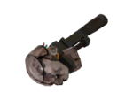
Botkiller Dismantler Use on Botkiller weapon to consume the weapon and redeem its Botkiller attachment, which can be applied to another Botkiller weapon to unlock an alternative style.
This is a limited use item. Uses: 1
Changes Botkiller dismantlers are the only way of applying new alternative styles to Botkiller weapons Botkiller weapons lists every attachment type assigned within the stats
Reason
This is mainly to reduce inventory bloat and to provide somewhat of a sink for botkiller rewards.
Regular MvM players can work towards earning 'Trophy' botkillers that have every botkiller type attached.
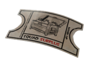
Squad Surplus Voucher Present this voucher in Mann vs. Machine when starting Mann Up Mode. Each team member that activates one will add an additional reward for all members upon completing the mission.
Changes Guarantees one of the following rewards upon completing any mission: 40% chance to receive 1 random weapon drop 30% chance to receive 2 random robot parts 20% chance to receive 1 random rare robot part 10% chance to receive 1 random robot cosmetic item
Reason
Many find the cost of $1.99 to be a bit steep for 6 weapons and a rare chance at a robot cosmetic. The pool of rewards has been expanded on and chances of getting alternative rewards are more probable.
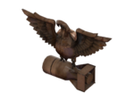
Operation Oil Spill Difficulty: Intermediate Doe's Doom (Decoy) Day of Wreckening (Decoy) Cave-in (Coal Town) Quarry (Coal Town) Mean Machines (Mannworks) Mannhunt (Mannworks)
Rewards Upon completing a mission: 1 weapon item drop (gauranteed) 5-7 robot parts (gauranteed) Upon completing a tour: 2 rare robot parts (gauranteed) 1 Rust Botkiller MK.I weapon (gauranteed) or 1 Blood Botkiller MK.I weapon (rare) 1 Australium weapon (extremely rare)
Reason
As the easiest mission to complete, while also having the most missions (6) to complete its tour. It seems appropriate to offer a grinding purpose to play through it.
Each mission complete offers a significant amount of robot parts to nearly ensure youll get what you need to complete your fabricators.
The small chance for an Australium weapon was put in so players do not feel like they are sacrificing the chance.
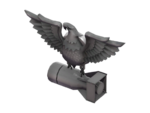
Operation Steel Trap Difficulty: Advanced Disk Deletion (Decoy) Data Demolition (Decoy) Ctrl+Alt+Destruction (Coal Town) CPU Slaughter (Coal Town) Machine Massacre (Mannworks) Mech Mutilation (Mannworks)
Rewards Upon completing a mission: 1 weapon item drop (gauranteed) 1-2 robot parts (gauranteed) 1 Strange Part (rare) Upon completing a tour: 1 Silver Botkiller MK.II weapon (gauranteed) or 1 Gold Botkiller MK.II weapon (rare) 1 Strangifier Fabricator (rare) 1 Australium weapon (extremely rare)
Reason
Offering additional alternative rewards allows for variation in tour selection.
This tour adds the reward of Strangifier Fabricators, which will require robot parts to complete, as well as Strange Parts.
The pool of items that can be Strangified has been expanded, giving an incentive to seek out ones you cannot normally obtain elsewhere.
Requiring 6 missions to complete and no gaurantees of getting either exclusive reward, this will only be for those willing to put some money into it.
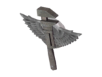
Operation Mecha Engine Difficulty: Advanced Disintegration (Decoy) Broken Parts (Bigrock) Bone Shaker (Bigrock)
Rewards Upon completing a mission: 1 weapon item drop (gauranteed) 1-2 robot parts (gauranteed) Upon completing a tour: 1 Rust Botkiller MK.I weapon (gauranteed) or 1 Blood Botkiller MK.I weapon (rare) 1 Botkiller Dismantler (garunteed) 1 Australium weapon (extremely rare)
Reason
Offering additional alternative rewards allows for variation in tour selection.
This tour adds a new reward that will help build up botkiller weapons, known as Botkiller Dismantlers.
With one gauranteed every 3 missions, this should be easy enough to grind out for some botkillers.
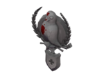
Operation Two Cities Difficulty: Advanced Empire Escalation (Mannhattan) Metro Malice (Mannhattan) Hamlet Hostility (Rottenburg) Bavarian Botbash (Rottenburg)
Rewards Upon completing a mission: 1 weapon item drop (gauranteed) 2-4 robot parts (gauranteed) 1 rare robot parts (rare) 1 Specialized Killstreak Fabricator (rare) Upon completing a tour: 1 Killstreak Kit (gauranteed) 1 Specialized Killstreak Fabricator (gauranteed) 1 Professional Killstreak Fabricator (rare) 1 Australium weapon (extremely rare)
Reason
Previously the only tour worth doing for its amount of gauranteed rewards, Operation Two Cities has had its robot part reward count dropped.
Instead, Operation Oil Spill (the easiest and longest mission) has been given the title of robot part grinding.
Operation Two Cities will keep its Killstreak rewards as is for those who wish to grind for them.
Rewards Upon completing a mission: 1 weapon item drop (gauranteed) 1-2 robot parts (gauranteed) Upon completing a tour: 1 Carbonado Botkiller MK.I weapon (gauranteed) or 1 Diamond Botkiller MK.I weapon (rare) 1 Collector's Kit Fabricator (very rare) 1 Australium weapon (extremely rare)
Reason
Offering additional alternative rewards allows for variation in tour selection.
This tour has a very rare chance of rewarding a Collector's Kit Fabricator, which will require robot parts to complete.
What used to be obtainable can now be grinded out through a 3 mission tour, though with no gaurantees.
Gamble with caution.
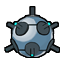
Robots
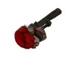
Bleed vs Robots
Changes Bleed duration no longer has a maximum of 10s Bleed damage inflicted by projectiles will fully stack with each application Arrows from
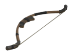
and apply bleed to robots
Reason
TODO
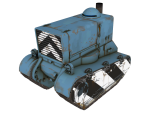
Tanks
Changes Tanks are now considered buildings Tanks always take base damage and are still susceptible to critical damage modifiers Heavy deals 40% less minigun damage to tanks
Reason
TODO
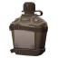
Power Up Canteens
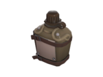
Power Up Canteen Currently holds 0 charges Holds a maximum of 3 charges Each charge lasts 5 seconds
Applies a bonus effect for a limited amount of time when used.
Must first be filled at an Upgrade Station and can only be filled with one bonus type at a time.
Changes Canteens cannot be activated until wave start Currently holds charges tooltip changed to be yellow and moved to top of the stats list Sentry Guns only benefit from canteens when the Canteen Specialist upgrade is purchased
Reason
This will prevent players from accidentally activating their canteens before the wave begins.
One side effect is that Demoman must make crit sticky traps as the wave starts.
The text change was to make the current charges more visible for spectating players.
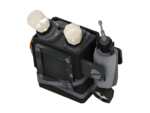
Crits Canteen Grants a crit boost for 5s Triples sentry gun firing rate for 5s
Changes Increased cost from $100 to $125
Reason
Making this canteen more expensive will make it dip into the player's upgrade credits pool a little more while maintaining its strong power.
Übercharge Canteen Grants invulnerability for 5s Grants a healing effect for 5s Grants a shield to sentry guns that block 75% of all incoming damage for 5s
Changes Effect now heals the user at a rate of 24hp/s Reduced Sentry Gun shield resistance from 90% to 75%
Reason
TODO
Ammo Refill Canteen Instantly refill all weapon clips and ammo Instantly recharge all damage meters All buildings upgrade by 1 level
Changes Ammo refill applies to all energy-based weapons Effect now instantly recharges all meters Affects meters dependent on time or damage, including meters that are in active use Does not affect Übercharge meters All level 1 buildings upgrade to level 2 and all level 2 buildings upgrade to level 3 on use Increased cost from $25 to $75
Reason
TODO
Recall Canteen Instantly revive or teleport user to spawn Grants a speed boost for 5s Pick up a targeted building from long range
Changes No longer teleports user to spawn User drops a reanimator on death Canteen can be used while dead to revive at spawn Hauling Sentry Guns into spawn no longer causes the Sentry Gun to self-destruct
Reason
TODO
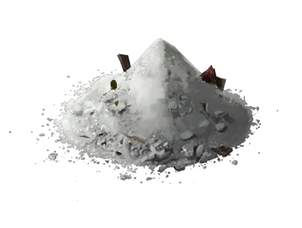
Upgrade Buildings Canteen Instantly upgrade all buildings to max level
Changes Removed
Reason
This canteen has been removed and its effect has been integrated into the Ammo Refill canteen through the Canteen Specialist upgrade.
Upgrade Station
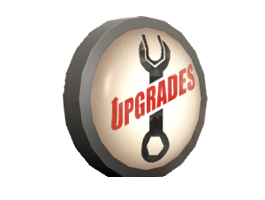
Upgrades
Changes Weapon upgrades will stack additively with existing weapon modifiers instead of stacking multiplicatively Example: Winger +50% clip size upgrade From -60% (5 base) -> -34%/-16%/0%/+15% (8/10/12/15) To -60% (5 base) -> -10%/+40%/+90%/+140% (11/17/23/29)
Reason
TODO
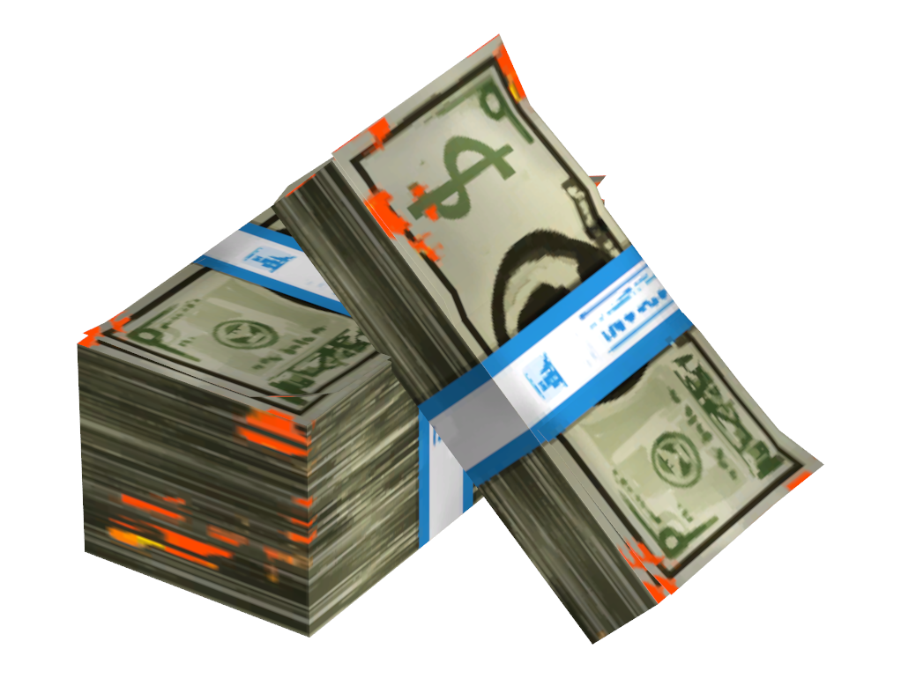
Refund Credit Pool Each player has an upgrade refund credit pool, which allows them to refund any singular upgrade point if the cost is not larger than the refund pool Refund pools carry over into every wave
Changes Replaced the 'Refund Upgrades' button with a refund credit pool system for the upgrade station HUD After wave completion, 25% of credits collected and all bonus credits earned are added to the refund pool Refunding any upgrade reduces the pool by its cost
Reason
This allows some upgrade flexibility while keeping the challenge of the waves/missions.
For instance, some upgrades such as fire resistance, can be refunded if the future waves do not require it.
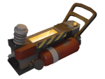
Buybacks
Changes Removed ability to buyback with credits Buybacks now require purchased Recall canteens which can be used while dead to instantly revive youself
Reason
TODO
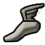
Scout
Class Upgrades & Innates Extra-large cash collection radius Health and overheal boosts from collected cash
Changes
Reduced max overheal gained from cash
With the max health upgrade, this increases to 420/465/510/555/600 +15 max health[$150][●●●●●] ↪︎ Replaces+2 health regen
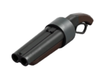
Primary Upgrades
Changes +20% reload speed[$250][●]
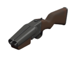
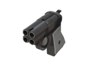
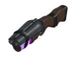
+10% firing speed[$200][●]
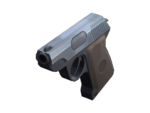
Secondary Upgrades
Changes Removed the
-35% speed on Target upgrade from
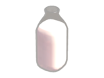
+25% damage[$400][●●●●]
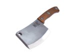
[$350][●]
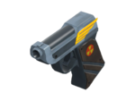
Earning a kill with this upgrade passively reloads ammo for your primary weapon [$250][●●●●] No longer reduces the damage requirement to fill +100% max misc ammo[$125][●●●●]
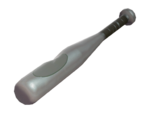
Melee Upgrades
Changes [$350][●]
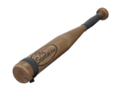
Ball stuns robots based on distance (2-7s) Giant robots are instead slowed by 35% Giant robots are unable to move for 7s if hit by a moonshot (unchanged) Note: The innate ability to 'stun' giant robots with moonshots was removed ↪︎ ReplacesBall Marks Target +15% recharge rate[$250][●●●●]
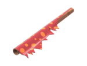
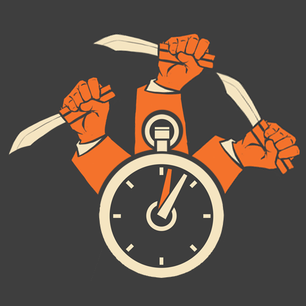
[$200][●●●●] Ball launch rate is also affected by this upgrade +100% max misc ammo[$125][●●●●] [$100][●●●]
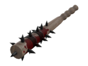
Increases bleed damage to 6/8/10
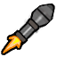
Soldier
Class Upgrades & Innates
Changes +15 max health[$150][●●●●●] ↪︎ Replaces+2 health regen
Primary Upgrades
Changes Removed the
+25% damage upgrade from
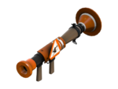
Removed the
Rocket Specialist upgrade from
Changed the
+50% clip size upgrade to a
+2 clip size for
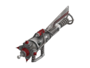
[$500][●●●●●]
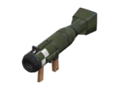
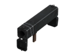
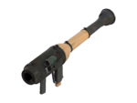
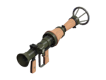
Rocket Specialist renamed to Explosive Specialist +20% bonus damage per point ( benefits from all points) On direct hit: Damage is unaffected by fall-off and briefly stuns the target (unchanged) On direct hit: +15% blast radius per point (unchanged) +15% projectile speed per point (fixed not benefitting) ↪︎ Replaces
Rocket Specialist and
+25% damage
Secondary Upgrades
Changes [$350][●] Soldier and Demoman get +2 to match their clip size upgrades Earning a kill with this upgrade passively reloads ammo for your primary weapon [$350][●] Buff effects are provided to the entire team, regardless of distance [$200][●●●] Changed duration increase from 12.5s/15s to 12s/14s/16s -30% push force taken[$100][●●●][●]
Melee Upgrades
Changes [$400][●●●●] Access to this upgrade no longer requires an equipped shield
Pyro
Class Upgrades & Innates -75% less airblast knockback vs Giant Robots
Changes [$350][●●]
This upgrade combines
+50% burn damage and
+50% burn time for all weapons
+50% afterburn damage on wearer per point +50% afterburn time on wearer per point +50% afterburn maximum duration (+5s per point, up to 20s) Afterburn duration applications will fully stack +15 max health[$150][●●●●●] ↪︎ Replaces+2 health regen
Primary Upgrades
Changes Removed the
+25% Burn Damage upgrade from all primary weapons
Removed the
+25% Burn Time upgrade from all primary weapons
-15% repressurization time[$200][●●●●][●]
Secondary Upgrades
Changes Removed the
+25% Burn Damage upgrade from all secondary weapons
Removed the
+25% Burn Time upgrade from all secondary weapons
+25% damage[$400][●●●●] [$350][●] Explode on Ignite damage reduced from 350 to 60
Affected by the
Arson Specialistupgrade: [●] 90 damage [●●] 120 damage
[$200][●●●●] Reload and firing speed have been consolidated into one upgrade ↪︎ Replaces
+20% reload speed and
+10% firing speed [$250][●●●●] No longer reduces the damage requirement to fill
Melee Upgrades
Changes
Weapons that malform sappers will instead
Destroys them in one hit, regardless of damage dealt [$400][●●●●] Hammer-type weapons benefit from a damage upgrade, similarly to swords +25 health on kill[$100][●●●●] [$100][●●●] Increases bleed damage to 6/8/10
Demoman
Class Upgrades & Innates Stickybombs will not be destroyed upon death
Changes +15 max health[$150][●●●●●] ↪︎ Replaces+2 health regen
Primary Upgrades
Changes [$500][●●●●] Rocket Specialist renamed to Explosive Specialist +20% bonus damage per point On direct hit: Damage is unaffected by fall-off and briefly stuns the target On direct hit: +15% blast radius per point +15% projectile speed per point ( benefits from all points) ↪︎ Replaces
+20% damage and
+25% projectile speed
[$400][●●●●] Bonus damage increased from 20% to 25%
Secondary Upgrades
Changes Removed the
+20% damage upgrade from
+2 clip size[$400][●●●●] ↪︎ Replaces+50% clip size +2 max stickybombs out[$400][●●●][●] [$350][●] Charging up the launcher to max will crit boost stickybombs fired [$350][●] Soldier and Demoman get +2 to match their clip size upgrades Earning a kill with this upgrade passively reloads ammo for your primary weapon +2s Crits On Shield Bash[$350][●●] ↪︎ Removes
+2s Crits On Kill from all melees +50% ammo capacity[$250][●●●]
Melee Upgrades
Changes Removed the
+2s Crits On Kill upgrade from all melee weapons
[$400][●●●●] Access to this upgrade no longer requires an equipped shield
Heavy
Class Upgrades & Innates Triple Hit Combo does not require alternating fists to gain critical damage -60% primary damage penalty vs Tanks -60% primary damage penalty vs Giant Robots
Changes +15 max health[$150][●●●●●] ↪︎ Replaces+2 health regen
Primary Upgrades
Changes Reduced Minigun damage penalty vs Tanks from -75% to -60% Reduced Minigun damage vs Giant Robots by -60% [$500][●●●] Grants a RAGE meter that can be activated with the Reload Key when full Building RAGE to full requires 15/12/9 robot kills (Giants count as 3 kills) RAGE causes bullets to penetrate robots up to medium range (base damage) RAGE fires +0/1/2 additional bullets per shot (0/25/50% damage increase) RAGE resets minigun accuracy and does not increase for the duration, even if still spun up RAGE effect has a duration of 5s ↪︎ Replaces
Knockback Rage and
Projectile Penetration
[$400][●●●] Increased firing speed per point from 10% to 15% Note: This fixes some purchase points not accurately increasing firing speed Attack interval per point: 0.090s/0.075s/0.060s (0.105s at base ) Attack interval per point: 0.120s/0.105s/0.090s (0.135s at base ) [$350][●●●●] Reduces the damage penalty vs Giant Robots by 25% per point (15% damage) Minigun damage per point: -45%/-30%/-15%/0% Does not affect damage against tanks [$350][●●] Hits required for projectile deletion changed from 2/1 to 1 at all levels Cooldown for projectile deletion changed from 0.3/0.1s to 0.3/0.15s The fire ring from the can also destroy projectiles +50% ammo capacity[$375][●●●] +25 health on kill[$300][●●●●]
Secondary Upgrades
Changes [$350][●] Lunchbox healing and effects are twice as strong and can overheal up to 150% Heals up to 600 health Heals up to 300 health and effect duration lasts 32s Effect duration lasts 60s (no healing benefits) Heals up to 240 health +100% max misc ammo[$125][●]
Melee Upgrades
Changes [$400][●●●●] Fist-type weapons benefit from a damage upgrade, similarly to swords +25 health on kill[$100][●●●●]
Engineer
Class Upgrades & Innates Redeployed buildings construct rapidly No move speed reduction while hauling buildings
Changes
Level 2 and 3 buildings have their
play before being active
Redeployment takes 1.6s to occur instead of instantly Level 1 buildings unaffected and are redeployed instantly +50% max metal capacity[$200][●●●●] ↪︎ Replaces+5 metal regen +15 max health[$150][●●●●●] ↪︎ Replaces+2 health regen
Primary Upgrades
Changes [$125][●●●]
Max revenge crits increases with ammo capacity, up to 60 for the
Projectile Penetration[$200][●] +25% projectile speed[$100][●●●●]
Secondary Upgrades
Changes Removed the
Projectile Penetration upgrade from
[$100][●●●●] Firing speed will also apply to the Alt-fire ability 0.675s/0.60s/0.525s/0.45s (0.75s at base)
Melee Upgrades
Changes [$400][●●●●] Fist-type weapons benefit from a damage upgrade, similarly to swords [$350][●][●●] Disposable Sentry Guns can now be repaired and resupplied Disposable Sentry Guns now have the same stats as the Combat Mini-sentry +25 health on kill[$100][●●●●] [$100][●●●] Increases bleed damage to 6/8/10
Building Upgrades
Changes
Relocated the
+50% Max Metal Capacity upgrade to Class Upgrades
Relocated the
+1 Disposable Sentry Gun upgrade to Melee Upgrades
[$350][●●] Engineer now requires this upgrade to share canteen bonuses with his Sentry Gun Canteen costs now update in real time, but lock the ability to refund this upgrade Refunding this upgrade only becomes available when the canteen is empty Canteen cost reduction changed from 10/20/30 to 25/50 Each point increases maximum canteens held by +1 (up to 5 canteens) Removed the canteen duration bonus [$400][●●●] Increased firing speed per point from 10% to 15% Note: This fixes some purchase points not accurately increasing firing speed Attack interval per point: 0.120s/0.090s/0.075s (0.135s at base ) Firing rate bonus caps at 0.060s for the [$350][●] Teammates using the teleporter are provided with a 3s speed boost
Medic
Class Upgrades & Innates Allies drop reanimators on death Reanimators can be healed to revive allies
Changes +15 max health[$150][●●●●●] ↪︎ Replaces+2 health regen
Primary Upgrades
Changes Removed the
+2 clip size upgrade from
+50% clip size[$200][●●●●] [$200][●●●●] Reload and firing speed have been consolidated into one upgrade ↪︎ Replaces
+20% reload speed and
+10% firing speed
+50% ammo capacity[$125][●●●] +10% firing speed[$100][●●●●] [$100][●●●] Increases bleed damage to 6/8/10 +25 health on kill[$100][●●●●]
Secondary Upgrades
Changes [$350][●●] Patients now see which and how many canteens you are holding via the Healer HUD Canteen costs now update in real time, but lock the ability to refund this upgrade Refunding this upgrade only becomes available when the canteen is empty Canteen cost reduction changed from 10/20/30 to 25/50 Each point increases maximum canteens held by +1 (up to 5 canteens) Removed the canteen duration bonus [$350][●●] Shield no longer doubles its attack interval with the second point Reduced shield duration from 12s to 10s Shield no longer builds from amount of health healed Shield no longer builds from amount of patient damage Shield now recharges with time, taking 40s to charge Shield build rate doubles when healing patients below 142.5% health Shield build rate doubles during setup time +2s Über duration[$300][●●●] +25% Übercharge rate[$250][●●●●][●●●][●] [$250][●●●●] No longer increases the health threshold for the ÜberCharge build rate penalty (>142.5% health) No longer increases overheal duration by +50% Changed overheal duration scaling from 34/60/94/135s to 22.5/30/37.5/45s (15s at base) [$250][●●●●] No longer provides +25% faster revive rate No longer increases self-regen rate Quick-Fix still has increased self healing during its Übercharge
Melee Upgrades
Changes [$100][●●●] Increases bleed damage to 6/8/10
Sniper
Class Upgrades & Innates Primary weapon kills auto-collect cash
Changes +15 max health[$150][●●●●●] ↪︎ Replaces+2 health regen
Primary Upgrades
Changes
Silent Killer: Non-giant robots take twice as long to aggro from attacks
[$500][●●●●●] Renamed Explosive Headshot to Hitman Specialist No unscoping required until reload (with no charge delay between shots) +20% bonus damage per point Explosive Headshot damage changed from 150/170/190 to base damage x 2 Slow strength changed from 50%/65%/80% to 35% at all levels Slow duration changed from 2/3/4s to 2-5s (scaling with charge level) Explosion damage applies Jarate to robots for 2s with the ↪︎ Replaces
+25% damage and
Explosive Headshot
+50% clip size[$400][●●●●] [$250][●●●] Only applies to clip reloading for rifles and not firing speed No longer provides faster charge for the [$200][●●●●] Attack interval bonuses reduced from 20% to 10% with this change +25% faster charge[$250][●●●●] [$100][●●●] Increases bleed damage to 6/8/10
Secondary Upgrades
Changes Removed the
-35% speed on Target upgrade from
[$350][●] Earning a kill with this upgrade passively reloads ammo for your primary weapon [$250][●●●●] Affects the time saved from Nature's Call (-20% cooldown on headshot) [$100][●●●●] +5% ammo every 5s per point (min of 1) Razorback only provides ammo while active
Melee Upgrades
Changes [$100][●●●] Increases bleed damage to 6/8/10
Spy
Class Upgrades & Innates No move speed reduction while disguised Melee weapon kills auto-collect cash Large cash collection radius while cloaked Backstabs vs Giant Robots deal 195 damage
Changes [$350][●] +20% damage resistance while cloaked (40% total) Activation damage resistance goes up to 80% for the -25% debuff duration while cloaked per point (-75% total) No flickering while cloaked (loses robot aggro) +15 max health[$150][●●●●●] ↪︎ Replaces+2 health regen
Primary Upgrades
Changes +25% damage[$400][●●●●] [$250][●●●●●] Renamed Explosive Headshots to Hitman Specialist +20% bonus damage per point Explosive Headshot damage changed from 150/170/190 to base damage x 2 Slow strength changed from 50%/65%/80% to 65% Slow duration changed from 2/3/4s to 2-5s (scaling with distance) [$100][●●●●] Now improves accuracy recovery for all revolvers Now reduces headshot cooldown for the
Secondary Upgrades
Changes
Sappers are no longer consumed on use (always available) Sappers duration reduced from 4s to 2s Sappers deal damage to robots
(50 damage with
/ 20 damage with )
Sapper base slow vs giant robots reduced from 85% to 35%
Radar now applies the sapper to nearby robots Reduced radius of Radar effect from 512hu to 175hu [$350][●●●] Sapper Power applies Mark For Death to affected robots +15% increased slow strength per point (50%/65%/80%) No longer increases in radius per point Duration bonus changed from +0/1.5/3s to +1s per point [$100][●●●] Sapper radius is now its own upgrade Radius per point changed from 200/225/250 to 175/225/275
Melee Upgrades
Changes Non-giant robots do not aggro from backstab kills All robots take twice as long to aggro from backstabs that do not kill Robots can still aggro (and are not fooled) by attacking while within FOV Disguise time on backstab kills changed from 2s to instantaneous [$500][●●●●] Increases melee range by 25% Backstab kills instantly reload your primary weapon and grant 3/4/5/6s of critical hits Pierces backstab resistance against giants by +25% per point (unchanged) ↪︎ Replaces+2s crits on kill [$350][●●●●] Increases backstab damage by +100% (unchanged, reworded) Backstab damage per point: 390/585/780/975 (from 375/562.5/750/937.5)
 apply bleed to robots
apply bleed to robots


 +2s Crits On Kill
+2s Crits On Kill 


 Knockback Rage
Knockback Rage  Projectile Penetration
Projectile Penetration